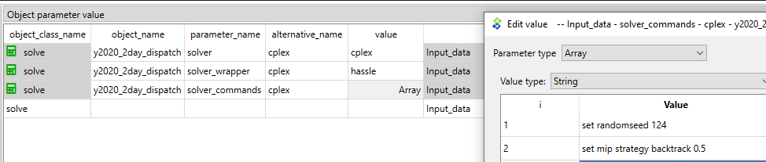

Performance and solvers
How to use CPLEX as the solver
CPLEX remains wireable as an advanced option for licensed users. Using CPLEX requires that you have installed the software, have a licence for it and have added it to PATH or to the environment where you are using the FlexTool, so that the tool can find the solver.
CPLEX is invoked via the solve parameter solver. FlexTool builds the LP in memory through polars + polar-high. The CPLEX path passes the problem to the Interactive Optimizer and produces two additional files in the work directory: a CPLEX log file and the solution file in CPLEX format.
Additional parameters:
solver_precommandis not used. FlexTool 3 put it in front of the cplex call (for example to reserve a floating licence); FlexTool 4 never runs commands stored in a database, for safety, and warns when one is set (the parameter is kept only so that older databases still read). Use the solver's own licence server setup, or reserve the licence before starting FlexTool; see Solver precommand.solver_argumentsis a map of CPLEX parameter names to values (for examplemip.tolerances.mipgap→0.001), set on top of the option file; a file or folder parameter takes only a plain file name there (see What the database may set). See Authoringsolver_arguments.

How to make the Flextool run faster
The list below contains potential ways to decrease the run-time of FlexTool models.
External changes (results will remain the same):
- Keep both the input database and Flextool on the same drive. If the database is on a different drive, it can slow the process. Avoid network drives.
- Try to ensure that there is sufficient memory available by closing other programs that use lot of memory. Linear optimization problems can require lot of memory.
- Use as fast computer as available. Both faster processors and more processors can decrease computation time.
Model changes (results will remain the same):
- Disable outputs that you don't need. This will speed up the result processing. See: How to enable/disable outputs
- Switch off the scenario plots (png) when the result viewer is enough; it shows every plot from the results. To see where a run's time goes, phase by phase, use
flextool-time-runs. See: Check that exercises run fast enough - When using HiGHS solver: in your solve's
solver_argumentsmap, you can setpresolve = onandparallel = onto speed up the optimisation. However, it can be better to turn HiGHS parallel off when executing multiple scnearios in parallel. - Especially with MIP problems, considering using a commercial solver like CPLEX (license required). See: How to use CPLEX as the solver
Model changes (results will be affected):
- Get rid of integer variables. Mixed integer programming can increase the solving time manyfold compared to the linear version especially if commercial solver is not available. MIP parameters are:
transfer_method: exact, change to reqular-
startup_method: binary, change to linear -
Set
virtual_unitsizeto the actual sub-unit size of the modeled plant whenstartup_method = binary. If you do not set it, FlexTool uses the fullexistingcapacity as the commitment granularity — every on/off decision moves the entire plant at once. For a large plant (say 1000 MW), that granularity is usually too coarse for the MIP to close to a useful tolerance in reasonable time: a realistic 3-day 3-representative-period UC problem with ~1 GW whole-unit commitment may run up against solver time limits at several percent MIP gap, while the same plant modelled withvirtual_unitsizematching its real sub-units (e.g. five × 200 MW boilers →existing = 5,virtual_unitsize = 200) closes to < 0.2 % in about a minute.virtual_unitsizeis not a free tuning knob — picking an arbitrarily small value (say 50 MW for a plant with no 50 MW sub-units) would let the solver commit fractions that don't physically exist, mis-representing minimum load and startup behavior. Choose the value that reflects the actual physical unit granularity of the modeled entity (e.g. individual boilers / turbines / strings). The clustered unit-commitment approach (Palmintier & Webster 2012) is just this: represent each real sub-unit as one unit in the integer count. When the modeled entity is inherently a single indivisible plant, leavevirtual_unitsizeunset (or useexisting = 1withvirtual_unitsize= the plant size) — and you may have to accept that the MIP is slow, usestartup_method = linear, or aggregate differently.
Model changes (potentially large changes to the results --> need to understand how the particular analysis will be affected):
- Use representative periods for investment decisions. See: How to create a multi-year model
- Split the timeline into parts. The solving time increases exponentially with the model size. Multiple smaller solves can be faster. Splitting is best done with Rolling window solve and Nested rolling solve. See: How to use a rolling window for a dispatch model, How to use Nested Rolling window solves (investments and long-term storage)
- Aggregate data. Technological: Combine power plants that are using the same technology. Spatial: Combine nodes. Temporal: Use longer timesteps.
How to use Benders decomposition (spatial)
Large systems that naturally split into regions (e.g. an interconnected pan-continental network where each country's internal grid is cheap but the joint solve is large) can be solved with a spatial Benders decomposition. A coordinating master holds the inter-regional trade flows and the trade-connection investment plus one recourse variable per region; each region is solved as an operational subproblem with the master's trade fixed, returning duals that become optimality cuts the master accumulates. The master objective is a valid lower bound and the loop converges on the optimality gap.
Set up the regions in the database:
- create one
groupper region, list itsnodemembers viagroup__node - set the group parameter
decomposition_methodto benders_regional on each region group - declare at least two such region groups in the active scenario
See the group.decomposition_method parameter in Groups and the algorithm write-up in dev/decomposition.md.
Then turn on Benders decomposition on the solve itself — set the
solve parameter decomposition to benders on the solve(s) you want
decomposed (optionally tuning benders_max_iter and benders_tolerance;
they default to 50 / 1e-3). Then run normally:
flextool-run \
sqlite:///input_data.sqlite \
--scenario-name multi_region
The choice is per solve, so a single chain can mix schemes (e.g. a
Benders investment solve followed by a monolithic dispatch solve — the
Benders invest solve's realised trade + in-region capacity threads into
the downstream dispatch). The per-solve routing is in
flextool/engine/solve/_orchestration.py and the coordinator (master +
cut loop) in flextool/engine/solve/_benders.py. benders_max_iter
caps the cut loop and benders_tolerance is the relative
optimality-gap threshold for declaring convergence. Use Benders when the
per-region solve is cheap but the monolithic solve is expensive; if the
regions are tightly coupled (i.e. cross-region flows dominate the
dispatch) the cut loop may need many iterations and a monolithic solve is
usually better.
Connections between regions (or between a region and the master) are
replaced by trade flows in the decomposition, so they cannot have a
startup_method, the exact transfer method or reserve: the run stops with
an error naming them. Binary online variables or exact connections inside a
region make the region subproblem a mixed-integer problem; the cuts are then
not exact (a warning is printed), so prefer startup_method linear in
decomposed solves.